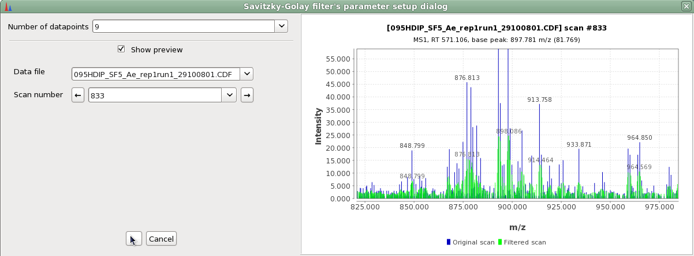
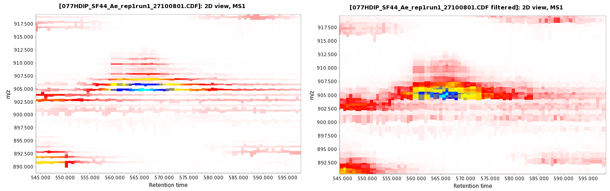
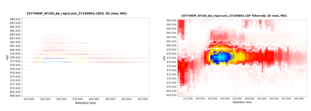

This module comprises various filters that can be applied to the raw data scan by scan.
The preview shows the superposed spectra of the scan before and after the filter is applied.

For each data point, the filter assigns to it the intensity average of all the datapoints inside the user defined window, which is centered in the mass value of this data point.
Raw data file before and after the filter was applied.

The Savitzky–Golay smoothing filter is a type of filter first described in 1964 by Abraham Savitzky and Marcel J. E. Golay.[1]
The Savitzky–Golay method essentially performs a local polynomial regression (of degree k) on a series of values (of at least k+1 points which are treated as being equally spaced in the series) to determine the smoothed value for each point. http://en.wikipedia.org/wiki/Savitzky-Golay_smoothing_filter
Raw data file before and after the filter was applied.

The scans out of the retention time range defined by the user are deleted by using this filter. Also, the data points of the remaining scans that are out of the m/z window defined by the user are deleted.
Each scan is divide in m/z bins whose length is defined by the user in the parameters. The mass of the new data point will be in the middle of each m/z bin's space. Its intensity is the average of the intensity of all the data points inside the bin.
Raw data file before and after the filter was applied.